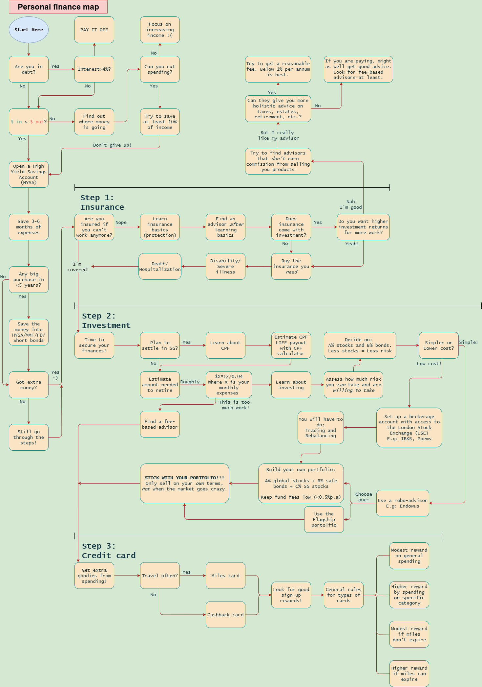

Where to start?
Personal finance can be a big headache. There just seems to be so many things you could be doing. Where do you start?
I’ve made a map running through some simple steps that are good to take, in order of what I think is more important to complete first. You don’t have to follow the order, you can start wherever you are comfortable with. At the very least, you can walk through this map to see where you are at, and what other steps you might want to take next.
There are many topics you can dive further into for an endless amount of time—just look at how many credit cards there are! But the hope is that this map helps you to have a big picture view of what are the things you might have missed out, or could work on next, to make smarter financial decisions and to be more in control of your financial life. Happy exploring!
Commonly used terms
- No real robots here. Typically it’s a company that helps you invest your money to different funds. They give you a risk-tolerance survey and have some prepared portfolios for you to choose from. I can’t speak for any except Endowus (haven’t checked out the rest), their Flagship ones are OK.
Examples: Endowus, Syfe, Stashaway
- Basically the platform for you to buy investment assets. Different ones come with different fees and access to different stock exchanges. In general, look for ones with access to London Stock Exchange (LSE) like IBKR.
Examples: IBKR, Poems, FSMone, WeBull, Tiger
- High yield savings account. Essentially a bank account where you get a higher yield for keeping your money there.
Examples: UOB One, OCBC 360, Standard Chartered Bonus$aver
- Money-market funds. Invests your money in cash-like instruments/safe bonds. Accessible through a robo-advisor/brokerage.
Examples: LionGlobal SGD Money Market, Fullerton SGD Cash Fund, Phillip Money Market Fund
- Fixed deposits. Banks offer this; lock in your money for a fixed time at a fixed interest rate. There are penalties for withdrawing early.
Examples: DBS Singapore Dollar Fixed Deposit, OCBC Time Deposit Account
- You loan money to governments/companies and they pay you interest.
Short duration bonds (<5 year) and government bonds are typically quite safe. You can buy these either on the primary market (directly from government/corporation) or secondary market (from someone who holds the bond).
Primary market examples: Singapore Government Securities (SGS), Singapore Savings Bonds (SSB). Bought through major banks—DBS, UOB, OCBC.
Secondary market examples: Vanguard Global Government Bond (VGGU), iShares TIPS (IDTP), Amundi Core Global Aggregate Bond, UOBAM United Singapore Bond Fund. Bought through brokers, robo-advisors, or banks.
- Buying and selling investment assets on a brokerage. There’s a slight learning curve to this—not too difficult to learn, but may be annoying to do frequently.
- Buying and selling assets to maintain their desired allocation in your portfolio.
Example: I want a 60% stocks, 40% bonds portfolio. After 1 year, since the two assets grew at different rates, my portfolio drifted to: 70% stocks, 30% bonds. I will then sell stocks and buy bonds to get back the 60/40 allocation.
Robo-advisor
Broker/brokerage
HYSA
MMF
FD
Bonds
Trading
Rebalancing
Personal finance map

I hope you enjoyed exploring the map! You will have noticed that I put a lot of emphasis on learning about different aspects of personal finance. This is because it pays—a lot. Here is just one illustration: An actively managed fund may charge you 1% of your investment per year for similar (or worse!) performance than an index fund. 1% of a $200,000 portfolio is $2000. By learning to choose the right funds, you can save $2000 per year.
Another example is buying excessive financial products (like some forms insurance). Nowadays there are all kinds of products to suit different people with different needs. In all likelihood you won’t need all or even most of them. By learning what each product does, and whether you fall into the category that requires them, you can save on excessive spending (make no mistake, these products are expensive).
Learning also doesn’t just reduce costs: it prevents poor financial decisions—like chasing hot new investment strategies or funds, or freaking out and selling during market downturns. Probably the biggest risk to any investment strategy, is you, the investor! You can protect your portfolio from its biggest risk by learning, and gaining financial literacy.
A second reason to learn, is that it actually helps you worry less about money. Before I spent time to learn about personal finance, I was constantly worried about whether I was saving enough or whether I should buy that $10 filter coffee instead of the $8 one. After I got my finances sorted out, I could just put aside what I planned to save each month and I get to spend the rest on whatever I want. So learn about personal finance to worry less about your finances, and to get the freedom to do what you want to do.
One way this runs downstream to the rest of your life, is through giving you buffer space. It’s a lot easier to try a new job, career path, or even a new business venture when you have extra resources lying around you know you can tap into.
Okay I'm in, what now?
I’m writing this blog to share the stuff I have learned about different aspects of personal finance (and life). My overall style is to not tell you what to do, but instead to give you the reasons why certain decisions make sense and others don’t. My hope is that once you learn the reasons for and against a decision, you can make a judgment for your own unique situation. I tend to go quite in depth for some discussions, but I’ve still written everything to be completely accessible if you are willing to walk through each step of the reasoning with me.
If all of that appeals to you, that's great! Feel free to check out the other articles.